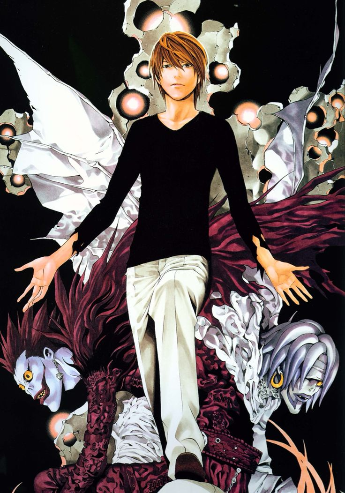

01 / KIRA
Light Yagami
Light Yagami — Kira. A genius who discovered the Death Note and chose to become the judge of humanity. His ultimate goal is to create a new world where he stands as its god.
INTELLIGENCE
10/10
MANIPULATION
10/10